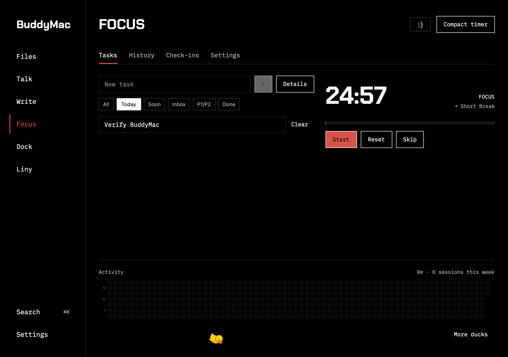

BuddyMac
Files, dictation, writing, focus, Dock icons and an AI assistant in one Mac app.
npx buddymac@latestmacOS 26 or later on Apple Silicon. Needs Node.js 20 or later. Or download the app from GitHub releases.

Set up
- Run the command above. BuddyMac installs in ~/Applications and opens in the menu bar. Run it again to update.
- Add your OpenRouter key in Talk → Settings. Write uses the same key. Files, Focus and Dock work without one.
- In Settings → Permissions, allow Microphone for dictation and Accessibility to type into other apps.
Tools
Press ⌘ K in BuddyMac to find any tool or action.
Files
Keep files ready to drag into any app.
- Drop, paste or add files, then drag them out. Open, Copy and Show in Finder work on several files at once.
- ⌘ A selects every file. Delete removes them from the shelf. The originals stay on disk.
- In Files → Settings, put the shelf on the left or right screen edge. Pin it to keep it open. Esc or Hide closes it.
Talk
Dictate into any app.
- Press Record, speak, then Stop. Set a dictation shortcut in Shortcuts to record from another app.
- Add names and specialist words to Dictionary. Snippets hold phrases you say often.
- Audio goes to OpenRouter. Optional local cleanup tidies English text on your Mac.
Write
Rewrite text with your own instructions.
- Create a profile in Profiles, or start from a template. Give it a shortcut.
- Select text in any app and press the shortcut. BuddyMac replaces it with the rewrite.
- Notes saves text, and each note can have its own shortcut.
Focus
Tasks, a work timer and breaks.
- Add tasks with a project, priority and due date. Start the timer, then pause or skip a phase.
- History lists finished sessions. Check-ins record your mood for the day.
- Settings adds a compact timer, a notch panel or a menu-bar timer.
Dock
Pick the icons your apps use.
- Open a BuddyDock pack, or make a new one from square artwork, 1024 × 1024 pixels at best.
- Select apps and press Apply selected. Keep selected applied puts icons back after app updates.
- Restore original icons undoes a change.
Liny
Chat with an assistant that can use tools.
- In Liny → Settings, connect your ChatGPT account, or add an OpenRouter or Z.AI key.
- Send a request, attach an image if it helps, and find old chats in History.
- Some screen-capture and computer-control actions are still limited.
Permissions
Closing a window keeps BuddyMac in the menu bar. Quit it from there. Start at login is in Settings → General.